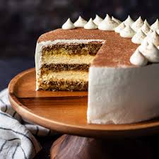

Tiramisu Cake Recipe
Home

Description
This tiramisu cake tastes just like the Italian dessert but in cake form. It's easy to make ahead and wonderful for a get-together or special occasion. Using a boxed cake mix as a base is a real time-saver!
Ingredients
- white cake mix
- water and eggs
- vegetable oil
- instant coffee powder
- coffee and coffee-flavored liqueur
Steps
- Make the cake batter and pour ⅔ of the batter into two prepared cake pans.
- Stir instant coffee into the remaining batter and pour it into the remaining pan.
- Bake the cake layers and let them cool.
- Make the filling.
- Make the frosting.
- Garnish the cake and chill before serving.